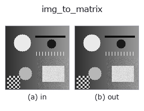

bridge op• Data kinds: image → matrix
• Call: fullseye.apply(img, "img_to_matrix", a=0.5, b=0.5) (the 2-D model is one image plus two scalar knobs a,b∈[0,1])

*The figure is the actual output on a synthetic 128×128 input. Left: input, right: output. Point clouds are drawn as a top-down scatter (brightness = z), 1-D series as a line plot, volumes as the maximum-intensity projection along z, videos as the middle frame, complex images as magnitude; return values that are not pictures are shown as the values themselves.*
*Knob a does not change the output (measured: identical at 0.1 / 0.5 / 0.9).*
*Knob b does not change the output (measured: identical at 0.1 / 0.5 / 0.9).*
On other images (synthetic scene / photo / coins. Top row: inputs, bottom row: their outputs. Knobs at default):
▸ img_to_matrix: other inputs (docs site)
*The 4th column is a colour (H,W,3) input. This op handles colour without crossing channels (it does not convolve the colour channel as a third spatial axis).*
Treat the (H,W) image as an H×W numeric matrix (sort matrix) — a pure cast.
Changes neither the values nor the shape (only a copy to float64). A reinterpretation of type for passing an image to the linear-algebra family (tb_mat_cond / tb_mat_pinv / tb_stat_covariance …); a, b are unused.
Note: an image is in general neither regular nor symmetric. The condition number is large (tb_mat_cond), and the covariance (tb_stat_covariance) is read as "row = sample, column = variable" —— that is, it becomes a statistic that treats each column (x position) as a variable and each row as an observation. If you want to pass it transposed, put transpose (ledger) in front.
• gallery2d_bridge family guide
• Sample-data catalog (download URLs / licences) — 2-D uses skimage.data (BSD/public domain) plus synthetic images; 3-D lists download URLs for real data sources (Stanford, PDS, …).
• Operator provenance and references — the sources of the research/methods this op family came from.
• The canonical algorithm (author, year) and its uses are named in the family usage guide above.
The program below has been verified to run (same input as the figure). In Studio's help this block becomes buttons that load and run it on the spot.
img_to_matrix 0.50 0.50
▸ Load this pipeline · Load & run
• gallery2d_bridge — py -3.11 examples/gallery2d_bridge.py
matrix as input)identity · tb_mat_pinv · tb_mat_cond · tb_stat_covariance · tb_stat_correlation · tb_intrinsics_to_fullseye · tb_intrinsics_to_carla · matrix_to_img
bridge)img_to_points · img_to_keypoints · img_to_signal · img_to_projection_profile · img_to_counts · img_to_video · img_to_volume · img_to_lightfield
*Provenance: ops.py — 2D operator registry. This per-op note is generated by tools/opdocs.py md (do not hand-edit).*
© 2026 Kazufumi Furuse — Fullseye operator documentation. Licensed under Apache-2.0.